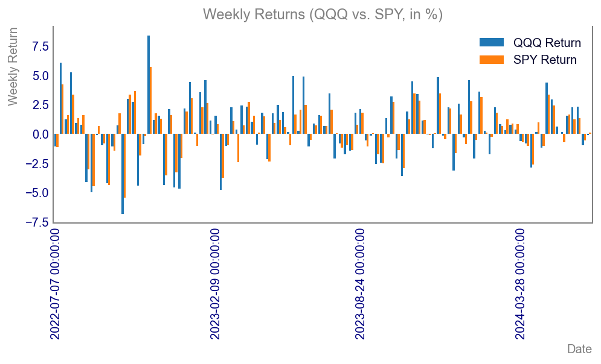

Tracking Error of QQQ vs SPY: A Practical Guide with Python
data
correlation
relationship
tracking-error
statistics
Auteur
Vincent D.
Date de publication
18 août 2024
Measuring Tracking Error: A Practical Guide with Python
In the world of finance and investing, understanding how closely an investment tracks its benchmark index is crucial for evaluating performance and risk. This concept is known as tracking error. In this blog post, we’ll delve into the tracking error of QQQ and SPY using weekly returns. We’ll discuss why this metric matters, how it’s calculated, and provide you with a full suite of examples using Python to analyze these ETFs.
What is Tracking Error and Why It Matters
Tracking error is a measure of how closely a fund follows its benchmark index. For investors and portfolio managers, this metric is crucial as it helps in assessing the risk associated with a fund’s performance relative to its benchmark. If you’re using index funds or ETFs like QQQ and SPY, tracking error gives you insights into how accurately these funds replicate their respective indices. For this article we will use the same metric to compare 2 ETFs, with a ### Performance Evaluation
Tracking error provides a clear picture of how well a fund replicates its benchmark. If the tracking error is low, the fund closely follows the index, making it a reliable choice for passive investors. ### Risk Assessment
It helps investors understand the consistency of a fund’s returns relative to its benchmark. A high tracking error indicates higher risk and volatility, signaling investors to tread with caution. ### Portfolio Management
Fund managers use tracking error to make informed decisions about rebalancing their portfolios. By minimizing tracking error, they can align their funds more closely with the benchmark, offering stable returns.
Key Formula and Parameters
Tracking error is essentially the standard deviation of the difference between the portfolio returns and the benchmark returns over a specified period. The formula for tracking error is:
(R_{p,i}) = Return of the portfolio (e.g., QQQ) for period (i)
(R_{b,i}) = Return of the benchmark index (e.g., SPY) for period (i)
(N) = Total number of periods (weekly returns in our case)
This formula calculates the standard deviation of the difference between portfolio returns and benchmark returns. A lower tracking error indicates closer alignment, whereas a higher tracking error indicates greater deviation.
Calculating Weekly Returns and Tracking Error
To get started, make sure you have the following Python libraries installed:
pip install yfinance pandas numpy matplotlib
Download Historical Data
We’ll use the yfinance library to download the historical weekly data for QQQ and SPY.
Code
%%captureimport yfinance as yfimport pandas as pdimport numpy as npimport matplotlib.pyplot as plt# Download historical data for QQQ and SPYqqq = yf.download('QQQ', start='2015-01-01', end='2024-06-30', interval='1wk')spy = yf.download('SPY', start='2015-01-01', end='2024-06-30', interval='1wk')# Calculate weekly returnsqqq['Weekly Return'] = qqq['Adj Close'].pct_change().dropna()spy['Weekly Return'] = spy['Adj Close'].pct_change().dropna()
Calculate Tracking Error
With our weekly returns calculated, we can now compute the tracking error.
Visualizing Historical Performance and Tracking Error
Visuals often provide the best insight into data trends and relationships. Let’s create various charts to help us understand the performance, volatility, and tracking error of QQQ and SPY.
Historical Weekly Prices
A line chart showcasing the historical weekly closing prices of QQQ and SPY over the past five years provides a visual representation of performance trends. This chart allows investors to quickly identify trends, correlations, and divergence periods between the two funds.
A bar chart displaying the weekly returns of QQQ and SPY side-by-side for the same five-year period illustrates the short-term performance comparison. This view makes it easier to observe how often QQQ’s returns outperformed or underperformed SPY during the specified timeframe.
Code
import matplotlib.dates as mdatesfig, ax = plt.subplots()plt.style.use('getting_started-chart.mplstyle')# Plot weekly returnscombined[['QQQ Return', 'SPY Return']].tail(104).multiply(100).plot(kind='bar', ax=ax, width=0.8)ax.set_title('Weekly Returns (QQQ vs. SPY, in %)')ax.set_xlabel('Date')ax.xaxis.set_major_locator(mdates.MonthLocator(interval=1)) ax.set_ylabel('Weekly Return')plt.show()

Scatter Plot of Weekly Returns
A scatter plot of weekly returns for QQQ against SPY helps depict the relationship between the returns of these two ETFs. By analyzing the data points’ distribution, investors can assess the levels of correlation and volatility between the two funds.
Code
fig, ax = plt.subplots()plt.style.use('getting_started-chart.mplstyle')# Scatter plot of weekly returnsax.scatter(combined['QQQ Return'], combined['SPY Return'])ax.set_title('Scatter Plot of Weekly Returns (QQQ vs. SPY)')ax.set_xlabel('QQQ Weekly Return')ax.set_ylabel('SPY Weekly Return')plt.show()
Histogram of Weekly Returns
A histogram of the weekly returns for QQQ and SPY provides insights into the distribution of returns over the displayed five-year period. This visualization helps highlight the frequency of different return sizes and indicates whether one ETF exhibited more consistent performance.
Code
fig, ax = plt.subplots()plt.style.use('getting_started-chart.mplstyle')# Histogram of weekly returnscombined['QQQ Return'].hist(ax=ax, alpha=0.5, bins=50, label='QQQ')combined['SPY Return'].hist(ax=ax, alpha=0.5, bins=50, label='SPY')ax.set_title('Histogram of Weekly Returns (QQQ vs. SPY)')ax.set_xlabel('Weekly Return')ax.set_ylabel('Frequency')ax.legend()plt.show()
Rolling Standard Deviation of Weekly Returns
A chart showing the rolling standard deviation of weekly returns for QQQ and SPY illustrates the volatility of each ETF over time. This visualization highlights periods of high and low volatility, essential for understanding risk dynamics and how closely funds track their benchmarks.
Code
fig, ax = plt.subplots()plt.style.use('getting_started-chart.mplstyle')# Calculate rolling standard deviationrolling_std_dev = (combined['QQQ Return'] - combined['SPY Return']).rolling(window=52).std().multiply(52**0.5).multiply(100)# Plot rolling standard deviationrolling_std_dev.plot(ax=ax)ax.set_title('Rolling Tracking Error observed on Weekly Returns (QQQ vs. SPY)')ax.set_xlabel('Date')ax.set_ylabel('Rolling TE (52 Weeks)')plt.show()